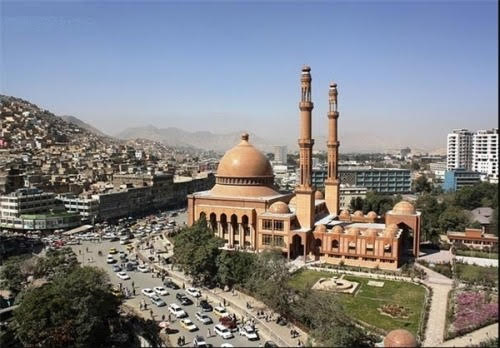
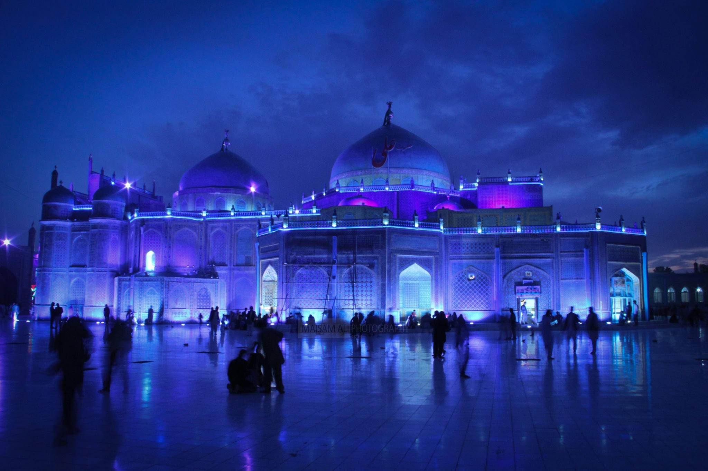
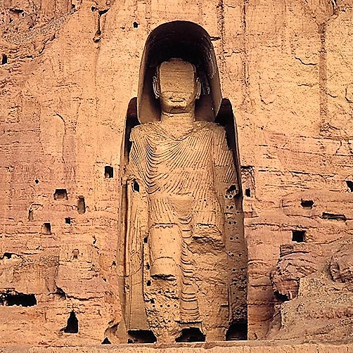
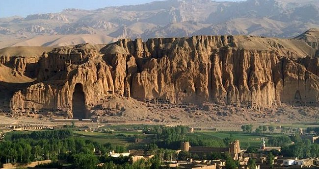
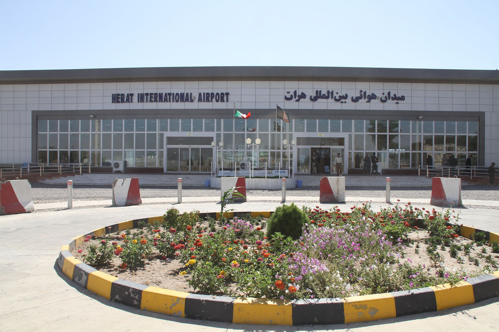
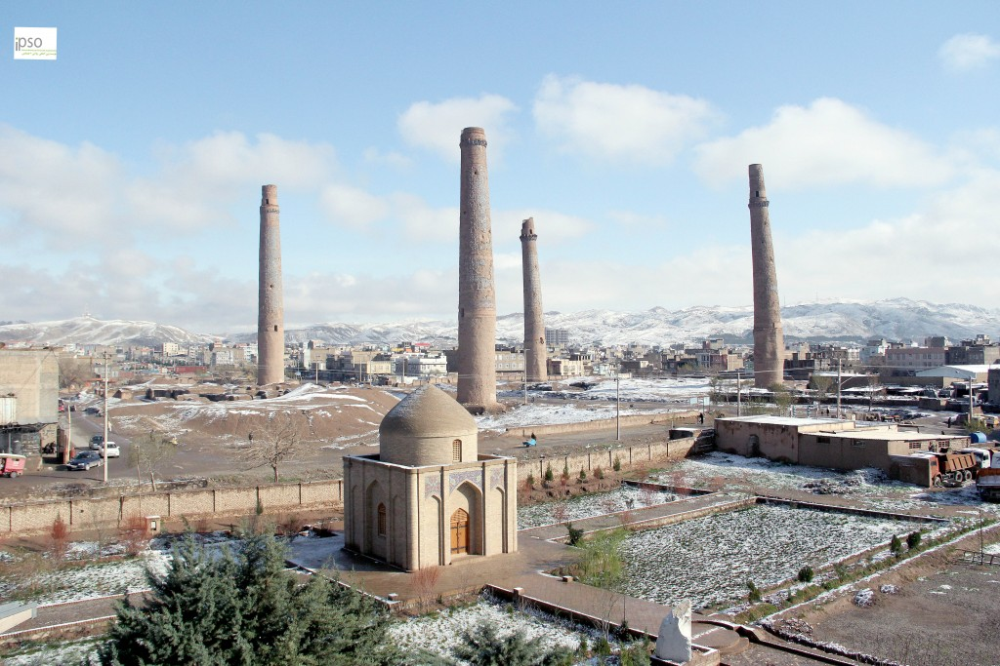
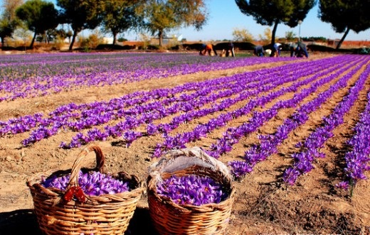
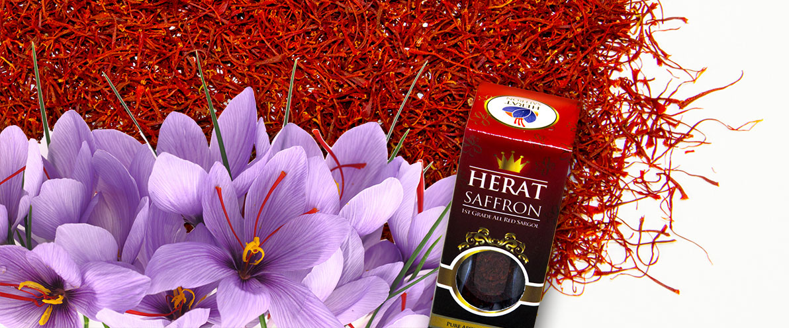

Contact Us
Phone: 078-6511516 OR 020-2230066
Email: niaziali.consultancy@gmail.com
Address: Taimany Project/ Opposite to Salim Carvan Plaza,
Street 4,District 4, Kabul, Afghanistan
|
|
|
|
|
|
Kabul is Afghanistan's largest city, located in the eastern part of the country. It's most spoken languages are Pashto and Dari. It is Afghanistan's capital city. Kabul's population is around 4 million, and it is the 64th largest country in the wrld. Kabul is around 3500 years old. In the early 19th century, the British occupied the city but were compelled to abandon it. Relations between Afghanistan and Great Britain were later established. The city was occupied by the Soviets in 1979 but they too abandoned it after the 1988 Geneva Accords were signed. A civil war in the 1990s between various rebel groups destroyed much of the city, resulting in many casualties. Since the removal of the Taliban from power in late 2001, the city gradually began rebuilding itself with assistance by the international community. Despite the many terrorist attacks by anti-state elements, the city is growing and developing. The city is divided into about 18 districts.
|  |

|
Mazar-e-Sharif is the third largest city in Afghanistan. It is the capital of the province Balkh, and has a population of around 600,000. Mazar-e Sharif, along with Herat, Jalalabad in the east and Kandahar in the south, makes Afghanistan an important strategic location in Asia. These type of locations are very important to Afghanistan because of the wars they have had. These were greatly used in battles. Mazar-e-sharif is also in close proximity to Uzbekistan and Tajikistan. The Mazar Sharif Airport has been heavily used during th 1980's soviet war. The name "Mazar-e-Sharif means "Noble Shrine" and is a reference to the large, blue tiled sanctuary and mozque in the center of the city know as the Shrine of Hazrat Ali or the Blue Mosque. The people of Mazar-e-Sharif are very generous and kind people. They are welcoming guests, and are very religious. The religion in Mazar-e-Sharif is Islam, like the rest of Afghanistan.
|  |
|
Bamyian is a historic city in the centre of afghanistan with wide mountain ranges and beautiful valleys.
The Budhas of Bamiyan being one of the most famous landmarks of the city, has come to be a beautiful historic and tourist attraction site. This cut out Budha in the central valley of bamyian is one fo the largest cut out budha in the wrold. This landmark marks the strong belief in buddhism back in the 6th and 7th century. The two monuments located on the east and west side of the valley are carved into the mountain. The first of these monuments being 175 feet in height and the second approximately 120 feet. Both budhas seems to have indian culture or some greek cultural origin since they were described to have robes on and have had curly hair carved. They have mostly been bombarded in the recent years due to the wars occuring in Afghanistan and it being a islamic country did not encourage the practice of worshipping the monuments. These budhas were distructed mostly by Mullah omar and his taliban forces in 2001 and justified this act as the sculture were bound to be destroyed since bamyian has been an islamic countries for many centuries now. Only a few details of the buddhas remain and rebuilding or reconstruction of it would be nearly imposssible as nearly all the original pictures or portraits of the buddahs has been destroyed.
|  |  |
Herat is one of the most important and attracting cities of Afghanistan. It has a population of around 436,000. It is situated in the fertile valley of Hari River. It is linked with Kandahar and Mazar-e-Sharif by highway. Herat has a number of attracting sites such as the Herat Citadel and the Mosallah Complex. Herat has been governed by various Afghan rulers since the early 18th century. Herat lies on the ancient trade routes of the Middle East, Central and South Asia. As the gateway to Iran, Herat collects high amount of customs revenue for Afghanistan. The city has an international airport. Herat has a high residential density clustered around the core. Agricultural land is the largest percentage of the total land use.
|  |  |
Herat also grows a lot of crops on its land. Saffron is being cultivated all over the province as a high value crop. Herat is actually very famous for its saffron, and even has many companies such as Herat Saffron TM. It imports and exports from and to all over the world.
|  |  |